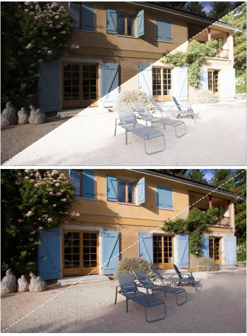
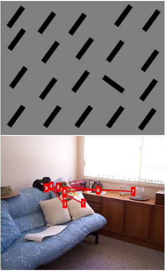
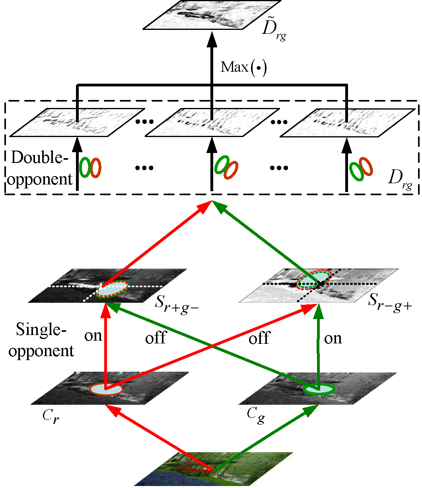
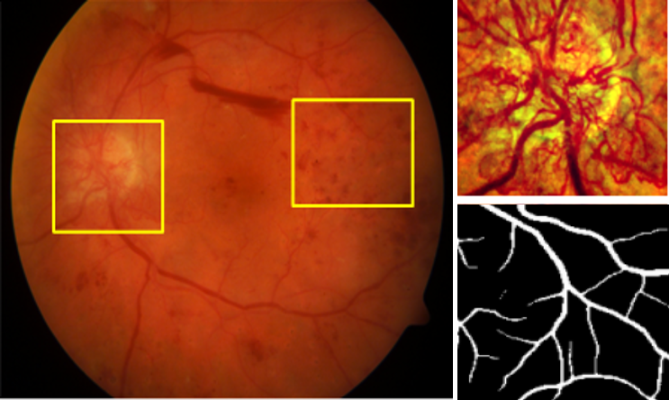

I am an associate research professor at the MOE Key Lab for Neuroinformation, School of Life Science and Technology, University of Electronic Science and Technology of China (UESTC). I received my Ph.D. degree in Biomedical Engineering from UESTC in 2016 under the supervision of Prof. Yong-Jie Li. From August 2019 to August 2020, I was a visiting scholar at the Computer Vision Lab, Department of Information Technology and Electrical Engineering, ETH Zurich, Switzerland.
I conduct interdisciplinary research at the intersection of visual cognition and computer vision. My research aims to explore the underlying computational theory of visual cognition and develop bio-inspired methods for computer vision applications. Through a combination of computational modeling and behavioral experiments, such as eye-tracking, we investigate the computational basis of many aspects of vision, such as visual perception, visual attention, and object recognition. In addition, we also try to explore new methods for medical data analysis.
|  |
Visual Adaptation and Image Enhancement
KF Yang, C Cheng, SX Zhao, HM Yan, XS Zhang, YJ Li. Learning to Adapt to Light. IJCV, 2023. [Codes]
XS Zhang, YB Yu, KF Yang, YJ Li. A fish retina-inspired single image dehazing method. IEEE TCSVT, 2022.
KF Yang, XS Zhang, YJ Li. A Biological Vision Inspired Framework for Image Enhancement in Poor Visibility Conditions. IEEE TIP, 2020. [Codes]
XS Zhang, KF Yang, J Zhou, YJ Li. Retina inspired tone mapping method for high dynamic range images. Optics Express, 2020.
KF Yang, H Li, HL Kuang, CY Li, YJ Li. An Adaptive Method for Image Dynamic Range Adjustment. IEEE TCSVT, 2019. [Codes]
|
 |
Gray Pixel and Color Constancy
KF Yang, SB Gao, YJ Li. Efficient Illuminant Estimation for Color Constancy Using Grey Pixels. CVPR, 2015. [Codes]
SB Gao, KF Yang, CY Li, YJ Li. Color Constancy Using Double-Opponency. IEEE TPAMI, 2015.
SB Gao, KF Yang, CY Li, YJ Li. A Color Constancy Model with Double-Opponency Mechanisms. ICCV, 2013.
|
|  |
Guided Attention and Saliency Detection
P Peng, KF Yang*, SQ Liang, YJ Li. Contour-guided Saliency Detection with Long-range Interactions. Neurocomputing, 2022. [Codes]
DH He, KF Yang*, XM Wan, F Xiao, HM Yan, YJ Li. A new representation of scene layout improves saliency detection in traffic scenes. Expert Syst. Appl.,2022.
P Peng, KF Yang, FY Luo, YJ Li. Saliency Detection Inspired by Topological Perception Theory. IJCV, 2021. [Codes]
KF Yang, H Li, CY Li, YJ Li. A Unified Framework for Salient Structure Detection by Contour-Guided Visual Search. IEEE TIP, 2016. [Codes]
T Deng, KF Yang, YJ Li, HM Yan. Where Does the Driver Look? Top-Down-Based Saliency Detection in a Traffic Driving Environment. IEEE TITS, 2016.
|
|  |
Receptive Field Models and Contour Detection
KF Yang, SB Gao, CF Guo, CY Li, YJ Li. Boundary Detection Using Double-Opponency and Spatial Sparseness Constraint. IEEE TIP, 2015. [Codes]
KF Yang, CY Li, YJ Li. Multifeature-based Surround Inhibition Improves Contour Detection in Natural Images. IEEE TIP, 2014. [Codes]
KF Yang, SB Gao, CY Li, YJ Li. Efficient Color Boundary Detection with Color-opponent Mechanisms. CVPR, 2013. [Codes]
|
|  |
Ophthalmic Image Analysis
Y Tan, WD Shen,..., KF Yang*, YJ Li*. Retinal Layer Segmentation in OCT images with Boundary Regression and Feature Polarization. IEEE TMI, 2023.
Y Tan, SX Zhao, KF Yang*, YJ Li*. A lightweight network guided with differential matched filtering for retinal vessel segmentation. Comput. Biol. Med., 2023.
X Wei, KF Yang, D Bzdok, YJ Li. Orientation and context entangled network for retinal vessel segmentation. Expert Syst. Appl. 2023.
Y Tan, KF Yang*, SX Zhao, YJ Li. Retinal Vessel Segmentation with Skeletal Prior and Contrastive Loss. IEEE TMI, 2022. [Codes]
J Wang, YJ Li, KF Yang*. Retinal fundus Image Enhancement with Image Decomposition and Visual Adaptation. Comput. Biol. Med., 2021.
|
 |
Other Topics
WW Yu, J Jiang, KF Yang, HM Yan, YJ Li. LGSNet: A Two-Stream Network for Micro-and Macro-Expression Spotting With Background Modeling. IEEE TAFFC, 2023.
SX Zhao, Y Chen, KF Yang, Y Luo, BY Ma, YJ Li. A Local and Global Feature Disentangled Network: Toward Classification of Benign-malignant Thyroid Nodules from Ultrasound Image. IEEE TMI, 2022.
|